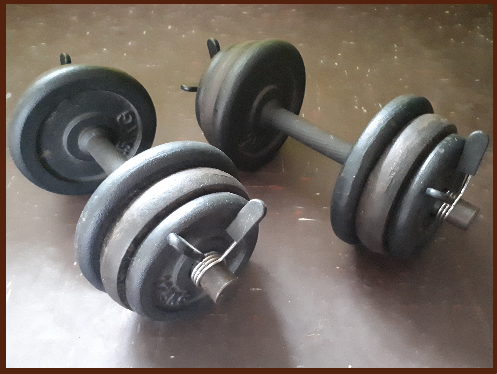
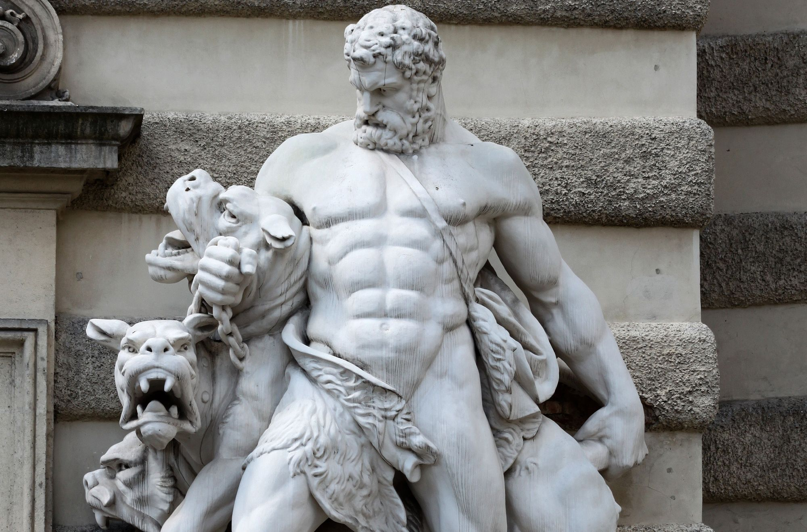

Dumbbells

So why train with dumbbells? Well, do you know those ancient Greek statues, the ones which depict men with peeled physiques, well guess what? they were all based on real physiques. So, its surprise that dumbbells can be traced back to 5th century BC to ancient Greece. The Greek version of the dumbbell was then called a haltere, an oblong-shaped stone with a handle. But if you need real life evidence of the muscle building power which the dumbbell has, then turn your attention to the early 1900s strongman, the father of modern-day bodybuilding, Eugen Sandow. Sandow himself drew inspiration from the ancient times and pioneered the light dumbbell training system to build his physique, way before any steroid was invented. Dumbbells are so versatile when it comes to the amount of exercise selection and are great for both compound and isolation use.

Wheather you are persuing a natural or enhanced protocol to endeavour in attaining hypertrohpy, just remember, the training principles remain almost the same, the thing that differs is the recovery. But fair enough, you will `look' like you are getting there quicker (false pretences), but we all get to our maximum potential at some point no matter how we train, so just enjoy the journey. Im 41 and have a full head of hair. In the bronze era, there was no such thing as steroids, peptides, HGH, or sarms, (just cocain) so why do people want to be the number 0.1 percentile when they can quite easily be happy with being natural at number one percentile. Case and point, Eugen Sandow (1867-1925), looked to the ancient statues and anatomy books for inspiration, and he is a legend of his time. In fact, the trophy given to the Mr. Olymipa is a staue of Eugen Sandow. But im sure that he would be be shuddering in his grave if he could see that he saw the short-cut to muscele building was contained in a vile and needle. Afterall, muscle attained by PEDS is borrowed rather than muscle earned, acccording to me. Im not judging, but earnt muscle is forever lasting, unlike hormones injecteced.

Price increase
I have noticed that since the pandemic, retailers have increased the price of weights, both of my dumbbell sets were purchased about one year before the pandemic, and cost me around £20 for second hand ones, and £30 for new ones. The same weights from the same place now cost twice the amount, so if you`re on a tight budget like me, then here’s a few things to look out for. Pretty soon you will be wanting to curl more than 10kg on each arm, but that’s when the price tag gets way out of my budgeting range, which is why I opted to buy a second set of second-hand dumbbells, as it was cheaper than buying separate plates online. By doing so, I could have 1 set of dumbbells, replacing the 4 x 0.5kg plates, with 4 x 2.5kg plates, so two dumbbells now have a safe maximum load of 12.5kg, 13.5kg including the bar. But now it is cheaper to buy seperate 2.5kg plates if you already own a pair of dumbbell bars, just make sure they are compaible in regards to their central hole fitting.

C`mon, in March 2021 the very same dumbbell set was £39.99. The next price increase shot up to £60. WTF. As of now, your talking £1 per kilo. That said, with the recent plandemic, try your hardest to source a second pair, because there are plenty of men who have given up on the goal of becoming better.